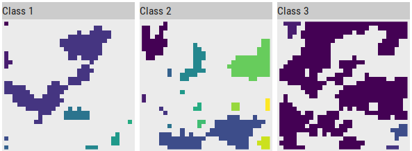

Introduction
Landscape metrics are xxx.
Other Software: fragstats, sdmtools (only on patch and class level?)
landscapemetrics all levels, tidy workflow, …
Using landscapemetrics
The functions in landscapemetrics starts with lsm_ and next are named based on a combination of abbreviations describing the scale (patch - p, class - c or landscape - l) and metric they calculate:
# landscapemetrics
lsm_"level"_"metric" example:
# Patch level
## lsm_p_"metric" example:
lsm_p_enn()
# Class level
## lsm_c_"metric" example:
lsm_c_enn()
# Landscape level
## lsm_p_"metric" example:
lsm_l_enn()…and returns a tibble with the same columns:
| layer | level | class | id | metric | value |
|---|---|---|---|---|---|
| 1 | patch | 1 | 1 | landscape metric | x |
| 1 | class | 1 | NA | landscape metric | x |
| 1 | landscape | NA | NA | landscape metric | x |
A possible use case could look like the next code chunk, where you would load your spatial data, calculate some landscape metrics and then use the resulting tibble in further analyses.
# load packages
library(landscapemetrics)
library(raster)
#> Loading required package: sp
library(dplyr)
#>
#> Attaching package: 'dplyr'
#> The following objects are masked from 'package:raster':
#>
#> intersect, select, union
#> The following objects are masked from 'package:stats':
#>
#> filter, lag
#> The following objects are masked from 'package:base':
#>
#> intersect, setdiff, setequal, union
# Import raster
landscape_raster <- landscapemetrics::landscape
# for local file: raster("pathtoyourraster/raster.asc")
# ... or any other raster file type, geotiff, ...
# Calculate all available landscape metrics
landscape_raster %>%
lsm_p_perim()
#> # A tibble: 27 x 6
#> layer level class id metric value
#> <int> <chr> <int> <int> <chr> <dbl>
#> 1 1 patch 1 1 perimeter 4
#> 2 1 patch 1 2 perimeter 12
#> 3 1 patch 1 3 perimeter 130
#> 4 1 patch 1 4 perimeter 4
#> 5 1 patch 1 5 perimeter 4
#> 6 1 patch 1 6 perimeter 20
#> 7 1 patch 1 7 perimeter 8
#> 8 1 patch 1 8 perimeter 10
#> 9 1 patch 1 9 perimeter 4
#> 10 1 patch 2 10 perimeter 38
#> # ... with 17 more rowsImportant information for using landscapemetrics
- The resolution of a cell has to be in meters, as the package converts units internally and returns results in square area for some metrics.
Using landscapemetrics in a tidy workflow
Pipe landscapes into the functions
Every function in landscapemetrics has data as its first argument, which makes piping a natural workflow:
landscape_raster %>%
lsm_p_enn()
#> # A tibble: 27 x 6
#> layer level class id metric value
#> <int> <chr> <int> <int> <chr> <dbl>
#> 1 1 patch 1 1 euclidean nearest neighbor distance dist~ 7
#> 2 1 patch 1 2 euclidean nearest neighbor distance dist~ 4
#> 3 1 patch 1 3 euclidean nearest neighbor distance dist~ 2.83
#> 4 1 patch 1 4 euclidean nearest neighbor distance dist~ 2
#> 5 1 patch 1 5 euclidean nearest neighbor distance dist~ 2
#> 6 1 patch 1 6 euclidean nearest neighbor distance dist~ 2.83
#> 7 1 patch 1 7 euclidean nearest neighbor distance dist~ 4.12
#> 8 1 patch 1 8 euclidean nearest neighbor distance dist~ 4.12
#> 9 1 patch 1 9 euclidean nearest neighbor distance dist~ 4.24
#> 10 1 patch 2 10 euclidean nearest neighbor distance dist~ 4.47
#> # ... with 17 more rowsUse multiple metric functions
As the result of every function always returns a tibble, combining the metrics that were selected for your research question is straight forward:
# bind results from different metric functions
patch_metrics <- dplyr::bind_rows(
lsm_p_cai(landscape),
lsm_p_circle(landscape),
lsm_p_enn(landscape)
)
# look at the results
patch_metrics
#> # A tibble: 81 x 6
#> layer level class id metric value
#> <int> <chr> <int> <int> <chr> <dbl>
#> 1 1 patch 1 1 core area index 0
#> 2 1 patch 1 2 core area index 20
#> 3 1 patch 1 3 core area index 48.6
#> 4 1 patch 1 4 core area index 0
#> 5 1 patch 1 5 core area index 0
#> 6 1 patch 1 6 core area index 14.3
#> 7 1 patch 1 7 core area index 0
#> 8 1 patch 1 8 core area index 0
#> 9 1 patch 1 9 core area index 0
#> 10 1 patch 2 10 core area index 42.9
#> # ... with 71 more rowsConnected labelling
landscapemetrics makes internally heavy use of an implementatian of a connected labelling algorithm by Thell Fowler (https://github.com/Thell/ccloutline) and exports an reimplementation of this algorithm:
cclabel_landscape <- landscapemetrics::cclabel(landscape)
landscapetools::util_facetplot(cclabel_landscape, nrow = 1)
Visualizing patches
To visualize patches in a landscape and encode each patch with an ID that can be used to compare a landscape metric with the actual landscape you can use the R package landscapetools (currently only in the version on Github):
landscapetools::util_show_patches(landscape)

In our way this helps a lot to get a feeling for the landscape metrics and to better understand the composition and configuration of the landscape of interest.